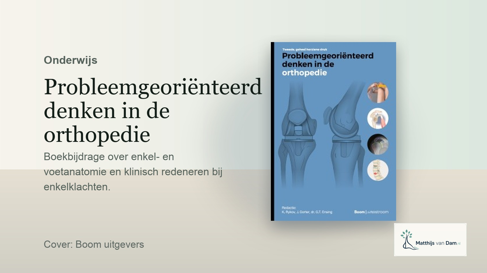

Onderwijs
Probleemgeoriënteerd denken in de orthopedie: bijdragen over voet en enkel
Voor de tweede herziene druk van Probleemgeoriënteerd denken in de orthopedie werkte ik mee aan hoofdstukken over de anatomie van enkel en voet en over klinisch redeneren bij enkelklachten.
Denken vanuit de klacht
Orthopedische klachten worden vaak samengevat in een diagnose: artrose, instabiliteit, standsafwijking of een peesprobleem. In de spreekkamer begint het meestal eenvoudiger: iemand heeft pijn, loopt anders, kan niet sporten of vertrouwt een gewricht niet meer.
Vanuit zo'n klacht probeer je stap voor stap te begrijpen wat er aan de hand kan zijn. Anatomie, lichamelijk onderzoek en beeldvorming helpen daarbij, maar krijgen pas betekenis in de context van het verhaal van de patiënt. Juist bij voet- en enkelklachten kunnen kleine verschillen in stand, beweeglijkheid en belasting veel uitmaken.
Onderwijs dicht bij de praktijk
Wat ik prettig vind aan dit soort onderwijs, is dat het dicht bij de praktijk blijft. Studenten, aios en andere zorgprofessionals hebben uiteindelijk vooral iets aan een manier van denken die ze kunnen gebruiken bij een echte patiënt, met een echte klacht en soms onvolledige informatie.
Dan gaat het niet alleen om de juiste diagnose, maar ook om het uitleggen van onzekerheid, het kiezen van een logische vervolgstap en het herkennen wanneer aanvullende diagnostiek of verwijzing wel of juist niet helpt.
Ook bruikbaar buiten het boek
Een boekhoofdstuk is natuurlijk maar één vorm. Dezelfde manier van kijken komt ook terug in scholingen, casuïstiekbesprekingen en overleg met andere zorgverleners. Niet omdat iedereen orthopedisch chirurg moet worden, maar omdat gedeeld redeneren helpt om elkaar beter te begrijpen.
Zeker bij voet- en enkelklachten kan dat veel schelen. Een goede verwijsvraag, heldere uitleg over wat al geprobeerd is en een gedeeld beeld van de klacht maken het vervolg vaak praktischer voor patiënt en zorgverlener.
Bron/context: Probleemgeoriënteerd denken in de orthopedie, 2e herziene druk, Boom.
Verder lezen
Ook relevant bij onderwijs en klinisch redeneren

Onderwijs
AIOS-onderwijs voet en enkel in München
Terugblik op hands-on onderwijs over voet- en enkelchirurgie, techniek en klinisch redeneren.
Lees artikel
Voet en enkel
Patiënt-specifieke instrumentatie bij complexe voet- en enkelchirurgie
Professionele duiding van 3D-planning, custom drill guides en schroefpositionering.
Lees artikel